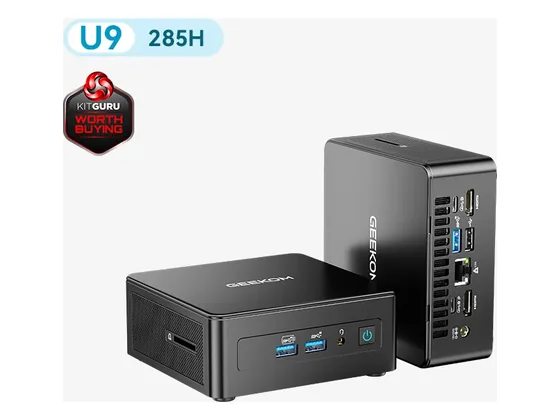

Geekom A9 Max : avis, tests et prix
Le verdict en une phrase. Un mini-PC très puissant et bien fini, livré avec 32 Go de RAM évolutifs et 2 To de SSD. La puce graphique intégrée reste sa limite.
N° 8 sur 10 dans le top 10 Ordinateurs de bureau création.

Pour qui ?
Vous voulez un mini-PC très puissant, livré avec 32 Go de RAM et 2 To.
Votre travail repose sur la carte graphique : elle reste intégrée.
Le consensus de la presse
Sur 16 notes, 13 atteignent ou dépassent 8/10. La plus haute : 10,0/10 (TechPowerUp) ; la plus basse : 6,0/10 (KitGuru). Dernier test relevé : septembre 2026.
Où l'acheter
La configuration peut différer d'un marchand à l'autre : vérifiez la fiche avant d'acheter. Seuls les liens Amazon sont affiliés à ce jour ; les autres sont de simples liens directs. Aucun n'influence les notes ni le classement.
Tous les tests recensés
Chaque ligne renvoie vers le test d'origine. Les notes sont converties sur 10 ; « test » signale un article sans note chiffrée. Notre méthode.
- TechPowerUp10,0
- Notebookcheck8,2
- Frandroid8,0
- Frandroid8,0
- KitGuru8,0
- Neozone8,0
- Neozone8,0
- Notebookcheck8,0
- PhotoTrend8,0
- Presse Citron8,0
- TechPowerUp8,0
- TechRadar8,0
- Tom's Hardware8,0
- Clubic7,0
- PC Gamer6,7
- KitGuru6,0
- AndroidWorldtest
- AndroidWorldtest
- ComputerBasetest
- Connect.detest
- GBATemptest
- IT Protest
- Neowintest
- Neowintest
- Neowintest
- wccftechtest
Source du relevé : Synthèse CommentChoisir.
Les alternatives pour le même usage
Tout le top 10 → Minisforum AI X1 ProBoîtier métal, alimentation intégrée, lecteur d'empreintes et refroidissement efficace : un mini-PC haut de gamme calme et bien pensé.
N° 7 · La mini-station IA
Minisforum AI X1 ProBoîtier métal, alimentation intégrée, lecteur d'empreintes et refroidissement efficace : un mini-PC haut de gamme calme et bien pensé.
N° 7 · La mini-station IA
 Minisforum MS-S1 Max16 cœurs Zen 5 et jusqu'à 128 Go de mémoire unifiée : une mini-station taillée pour l'IA locale et le calcul lourd.
N° 9 · Le Core Ultra compact
Minisforum MS-S1 Max16 cœurs Zen 5 et jusqu'à 128 Go de mémoire unifiée : une mini-station taillée pour l'IA locale et le calcul lourd.
N° 9 · Le Core Ultra compact

Geekom IT15Les 16 cœurs du Core Ultra 9 dans un boîtier de poche, avec deux ports USB4 et un Windows sans logiciels superflus.Questions fréquentes
Que pense la presse de l'ordinateur Geekom A9 Max ?
La note presse moyenne est de 7,9/10, calculée sur 16 notes (de 6,0 à 10,0/10). Un mini-PC très puissant et bien fini, livré avec 32 Go de RAM évolutifs et 2 To de SSD. La puce graphique intégrée reste sa limite.
Quels sont les points faibles relevés par les tests ?
Prix élevé ; Puissance graphique limitée ; Démontage peu aisé.
À qui s'adresse le modèle Geekom A9 Max ?
Vous voulez un mini-PC très puissant, livré avec 32 Go de RAM et 2 To. À éviter si : votre travail repose sur la carte graphique : elle reste intégrée.
Où l'acheter, et à quel prix ?
Prix relevés le 02/10/2026 : 1 699 € chez Geekom ; 1 699 € chez Amazon. Les prix changent vite et la configuration peut différer d'un marchand à l'autre : seul le prix affiché par le marchand fait foi.